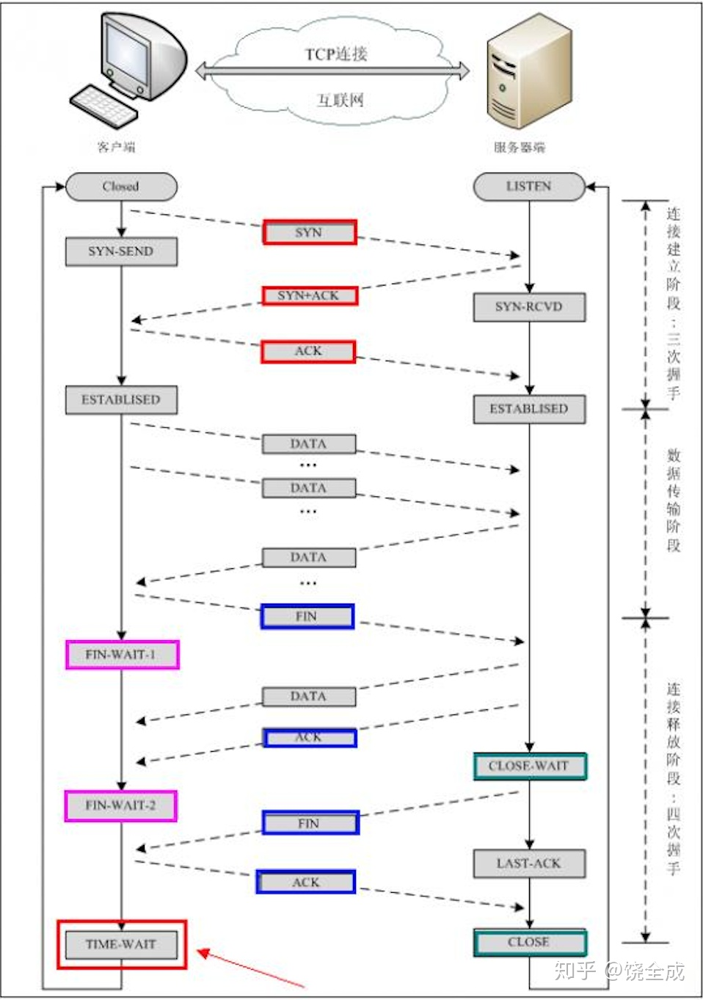

TCP的三次握手和四次挥手
TCP存在于网络模型的运输层，TCP是一种面向连接的单播协议，因此要确保连接的稳定性，需要三次握手来确定建立稳定的连接，以及四次挥手来确定断开连接。
一个TCP连接由一个4元组构成，分别是两个IP地址和两个端口号。
三次握手：
- 第一次握手：客户端发送网络包，带有SYN标志，服务端收到了。这样服务端就能得出结论：客户端的发送能力、服务端的接收能力是正常的。
- 第二次握手：服务端发包，带有SYN和ACK标志，客户端收到了。这样客户端就能得出结论：服务端的接收、发送能力，客户端的接收、发送能力是正常的。
- 第三次握手：客户端发包，带有ACK标志，服务端收到了。这样服务端就能得出结论：客户端的接收、发送能力，服务端的发送、接收能力是正常的。
四次挥手：
- 第一次挥手：当有一方要关闭连接时，会发送指令告知对方，要关闭连接。
- 第二次挥手：对方返回一个ACK，此时一个方向上的连接关闭。
- 第三次挥手：等到另一个方向上的数据发送完毕之后，发送一个FIN标志来关闭此方向上的连接。
-
第四次挥手：接收方发送ACK确认关闭连接。
